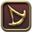
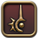

"Have you heard of the critically acclaimed MMORPG Final Fantasy XIV? With an expanded free trial which you can play through the entirety of A Realm Reborn and the award-winning Heavensward expansion up to level 60 for free with no restrictions on playtime." - Popular Copypasta
Final Fantasy 14, known commonly as FFXIV, is a subscription-based Massively Multiplayer Online Role Playing Game (MMORPG) based on the lore and style of the Final Fantasy series. In the game, players can play as a variety of Jobs from different Roles (Tank, DPS, Healer), each with its unique playstyle and skillset. The game boasts an extensive story, and each patch updates the game with new Main Story Quests (MSQ). Through the MSQs, the game feels reminiscent of a traditional JRPG game. In addition to MSQs, there are other means to enjoy the game. Interacting with fellow players throughout the expansive world, defeating open-world bosses, and the Casino are some ways players spend their time. Arguably one of the most popular game contents is the game's endgame content: Savage and Ultimate raids. These contents require high skill and coordinated teamwork, involving intricate puzzle-like mechanics in difficult boss battles. Both Savage and Ultimate raids are challenged with 8-man parties. Savage raids are considered difficult endgame content, and Ultimate raids are considered the most difficult, challenging battles available in the game.
A table of each job can be found below, and
more information can be found on the official FFXIV Jobs page.
| Icon | Job | Role/Subrole | Description |
|---|---|---|---|
| Paladin (PLD) | Tank | pld is able to cast a ranged spell as part of it's main skill rotation which lets you move around more than the other classes. design wise pld is themed around being an armored knight with a sword and shield and can cast holy magic | |
| Warrior (WAR) | Tank | Wields a greataxe and have numerous self-healing abilities, deal decent damage, and pull in mobs of enemies efficiently | |
| Dark Knight (DRK) | Tank | desc | |
| Gunbreaker (GNB) | Tank | desc | |
| White Mage (WHM) | Healer | desc | |
| Scholar (SCH) | Healer | desc | |
| Astrologian (AST) | Healer | desc | |
| Sage (SGE) | Healer | desc | |
| Dragoon (DRG) | DPS/Melee | desc | |
| Monk (MNK) | DPS/Melee | desc | |
| Ninja (NIN) | DPS/Melee | desc | |
| Samurai (SAM) | DPS/Melee | desc | |
| Reaper (RPR) | DPS/Melee | desc | |
| Bard (BRD) | DPS/Physical Ranged | desc | |
| Machinist (MCH) | DPS/Physical Ranged | desc | |
| Dancer (DNC) | DPS/Physical Ranged | desc | |
| Black Mage (BLM) | DPS/Caster | desc | |
|  | Summoner (SMN) | DPS/Caster | desc |
|  | Red Mage (RDM) | DPS/Caster | desc |